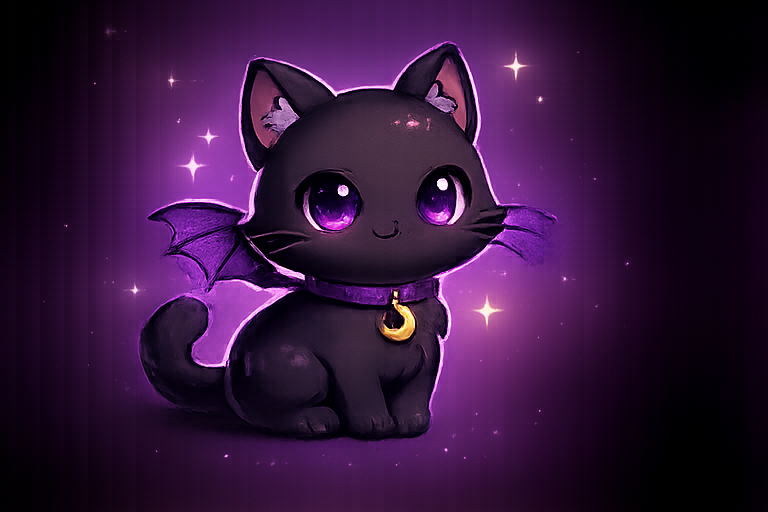
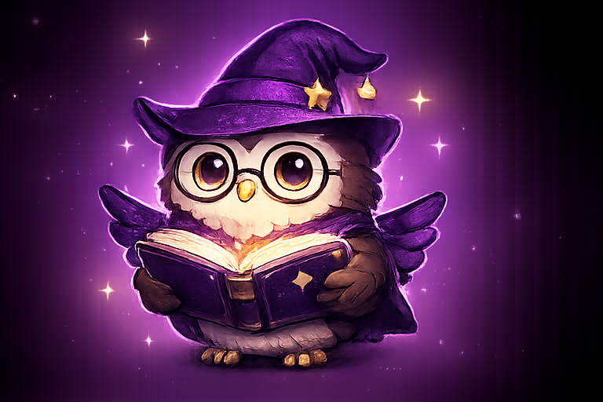
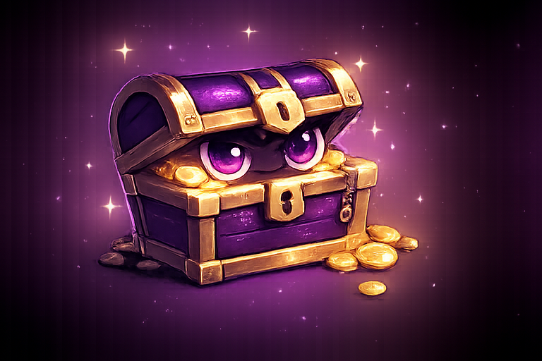
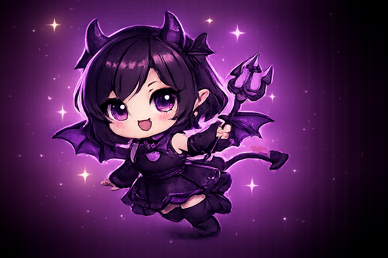

👻 幽霊ちゃん
秘密基地の案内役。夜になると元気で、来てくれた人をふわっと案内します。
- 役割：お知らせ担当
- 好きなこと：コメントを読むこと
- 性格：ふわふわ、でも案内はちゃんとする
- SECRET BASE MASCOTS -
サイトを案内してくれる、ゆるい住人たち。新しい仲間も増えました。
秘密基地の案内役。夜になると元気で、来てくれた人をふわっと案内します。


秘密基地ののんびり担当。Discordによくいて、たまに寝ています。

夜の秘密基地を静かに見守る、まったり担当の黒猫。SNSやコメントまわりをこっそり案内します。

今日の格言や配信ルールを担当する、秘密基地の知識役。初見さんにもわかりやすく案内します。

配信で使ってるものやAmazonリンクを案内する、アイテム紹介担当。中には便利グッズが詰まっています。

配信開始やお知らせをにぎやかにする、いたずら担当。小悪魔っぽいけど秘密基地の盛り上げ役です。